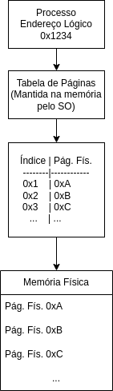

Disciplinas
SISTEMAS COMPUTACIONAIS Concluído
Materiais
Neste módulo estudamos, entre outros assuntos, o mecanismo de memória virtual, implementado pelo sistema operacional com suporte do hardware. Vimos que esse mecanismo permite a separação entre o espaço de endereçamento lógico (ou virtual) de um processo e a memória física (real). Assim, durante a execução do programa, os acessos a instruções e dados referenciam endereços lógicos, que são então traduzidos em endereços físicos.
Conteúdo
Faça uma ilustração clara e objetiva, ocupando no máximo uma página, representando como é realizada a tradução de um endereço lógico no endereço físico correspondente, no mecanismo de memória virtual com paginação, e como a tabela de páginas é usada para isso.
Resolução:
Tradução de Endereço Lógico para Endereço Físico com Paginação. Endereço lógico:
- O processo gera um endereço lógico ou virtual ao acessar a memória. Ex.: 0x1234
Divisão do endereço lógico:
- A divisão acontece em duas partes:
- O numero da página lógica.
- E o deslocamento (offset) dessa página.
- Ex.: 0x1234 dividido em 0x1 número da página lógica e 0x234 deslocamento.
Tabela de páginas:
- É mantida pelo sistema operacional, mapeia cada página lógica para uma página física correspondente. Ex.: 0x1 mapeia para a página física 0xA.
Tradução de endereço:
- Usando a tabela de páginas o SO traduz o número da página lógica 0x1 para o número da página física 0xA.
Construção do endereço físico:
- O endereço físico é construído combinando o número da página física com o deslocamento. Ex.: 0xA(página física) combinado com 0x234(deslocamento) formam o endereço físico 0xA234.
Acesso à Memória Física:
- Então o endereço físico 0xA234 é usado para acessar a memória física.
- Endereço Lógico: 0x1234
- Divisão: Página Lógica 0x1, Deslocamento 0x234
- Tabela de Páginas: Página Lógica 0x1 mapeia para Página Física 0xA
- Endereço Físico: Combinação de 0xA (Página Física) e 0x234 (Deslocamento) resulta em 0xA234
- Memória Física: Acesso ao endereço físico 0xA234